Self Mastery
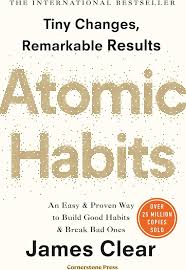
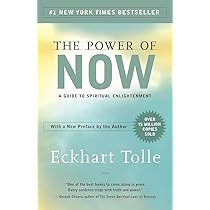
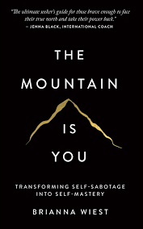
Atomic Habits
click me to buy this bookAtomic Habits by James Clear is a practical guide to building good habits and breaking bad ones through small, consistent improvements. The book emphasizes that tiny changes—getting just 1% better each day—can lead to remarkable results over time. Success is not determined by one big moment but by daily habits that compound into long-term progress. A key idea is to focus on systems instead of goals. Goals define what you want, but systems are the processes that help you achieve them. Lasting change happens when you improve your daily routines rather than chasing outcomes. Clear also highlights identity-based habits: lasting behavior change begins by deciding the type of person you want to become and proving it through small wins. Every action becomes a “vote” for your desired identity. The book introduces the Four Laws of Behavior Change: make habits obvious, attractive, easy, and satisfying. To break bad habits, reverse these laws—make them invisible, unattractive, difficult, and unsatisfying. Overall, Atomic Habits teaches that small, consistent actions shape identity, build better systems, and create meaningful, long-term change.
The power of Now
click me to buy this bookThe Power of Now by Eckhart Tolle teaches that true peace and fulfillment come from living fully in the present moment. The book explains that most human stress arises from dwelling on the past or worrying about the future, even though life only exists in the “now.” A central idea is that life is a series of present moments. Regret and anxiety occur because the mind constantly replays the past or anticipates the future. By focusing on what can be done right now, individuals become more productive and calm. Tolle also explains that pain comes from resisting what cannot be changed. Emotional suffering increases when we fight reality instead of accepting it. Acceptance reduces mental struggle and allows clearer thinking. Another key practice is observing thoughts without judgment. By watching the mind instead of reacting to it, people can separate themselves from negative thinking patterns. This awareness helps reduce anxiety, improve emotional control, and create inner peace. Overall, The Power of Now encourages mindfulness, acceptance, and presence. By focusing on the current moment and letting go of mental resistance, readers can experience greater clarity, reduced stress, and a deeper sense of well-being.
Mountain is you
click me to buy this bookThe Mountain Is You by Brianna Wiest is a self-discovery guide that helps readers overcome self-sabotage and unlock their true potential. The “mountain” symbolizes personal challenges formed by past trauma, insecurities, and life experiences. To grow, individuals must confront these inner obstacles and transform themselves. One key idea is identifying subconscious commitments, which often drive self-sabotaging behaviors. By understanding core needs—such as the desire for freedom, love, or security—people can align their actions with what truly fulfills them. The book also emphasizes embracing radical change. Humans naturally seek comfort, but growth requires stepping into discomfort and leaving behind outdated identities. Letting go of the past allows space for a stronger, more authentic self to emerge. Another important lesson is learning to distinguish intuition from intrusive thoughts. Intuition feels calm and rational, guiding you toward growth, while intrusive thoughts stem from fear and create anxiety. Recognizing the difference improves emotional intelligence and decision-making. Overall, The Mountain Is You teaches that by understanding inner needs, accepting change, and managing thoughts, individuals can stop self-sabotage and build a purposeful, fulfilling life.
Money and Health
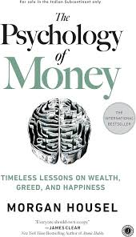

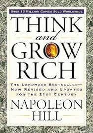
The power of Now
click me to buy this bookThe Psychology of Money by Morgan Housel explains how emotions, biases, and personal experiences shape financial decisions more than technical knowledge. The book emphasizes that managing money is less about intelligence and more about behavior. One major lesson is to avoid greed. Wanting more, even after achieving financial success, can lead to risky decisions and losses. Learning to be satisfied, protect what you have, and focus on long-term stability is key to building wealth. Another insight is that envy leads to poor financial choices. Comparing yourself to others can push you into unnecessary risks or unethical actions. Financial success is personal, and each individual’s journey is different. The book also highlights how early life experiences influence money habits. People who grow up during economic crises or prosperity develop different attitudes toward saving, investing, and risk. Recognizing these hidden biases helps in making rational financial decisions. Overall, The Psychology of Money teaches that wealth depends on patience, emotional control, humility, and long-term thinking. By managing behavior and avoiding emotional traps, anyone can make smarter financial decisions and work toward financial independence.
Rich Dad Poor Dad
click me to buy this bookRich Dad Poor Dad by Robert T. Kiyosaki is a personal finance classic that contrasts two mindsets about money: the “poor dad” mindset (job security and saving) and the “rich dad” mindset (investing and financial education). The book teaches that true wealth comes from financial literacy and building assets, not just earning a salary. A core lesson is understanding the difference between assets and liabilities. Assets put money in your pocket—such as investments, businesses, or rental income—while liabilities take money out, like loans and unnecessary expenses. Building wealth means acquiring assets that generate passive income. Another key idea is that the rich don’t work for money; money works for them. Instead of relying solely on a paycheck, financially successful people invest in opportunities that create long-term income streams. The book also emphasizes the importance of financial education. Schools often teach how to work for money but not how to manage or grow it. Learning about investing, taxes, and entrepreneurship helps individuals make smarter financial decisions. Overall, Rich Dad Poor Dad encourages readers to change their mindset about money, reduce liabilities, build assets, and pursue financial independence through smart investing and continuous learning.
Think and Grow Rich
click me to buy this bookRich Dad Poor Dad by Robert T. Kiyosaki is a personal finance classic that contrasts two mindsets about money: the “poor dad” mindset (job security and saving) and the “rich dad” mindset (investing and financial education). The book teaches that true wealth comes from financial literacy and building assets, not just earning a salary. A core lesson is understanding the difference between assets and liabilities. Assets put money in your pocket—such as investments, businesses, or rental income—while liabilities take money out, like loans and unnecessary expenses. Building wealth means acquiring assets that generate passive income. Another key idea is that the rich don’t work for money; money works for them. Instead of relying solely on a paycheck, financially successful people invest in opportunities that create long-term income streams. The book also emphasizes the importance of financial education. Schools often teach how to work for money but not how to manage or grow it. Learning about investing, taxes, and entrepreneurship helps individuals make smarter financial decisions. Overall, Rich Dad Poor Dad encourages readers to change their mindset about money, reduce liabilities, build assets, and pursue financial independence through smart investing and continuous learning.
Philosophy
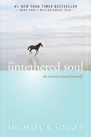
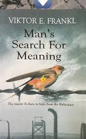
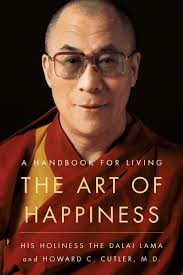
The untethered soul
click me to buy this bookThe Untethered Soul by Michael A. Singer is a spiritual guide that explores how to मुक्त yourself from limiting thoughts and emotions to experience inner peace and true freedom. The book teaches that most suffering comes from identifying too closely with the constant voice in the mind. A central idea is learning to observe your thoughts instead of identifying with them. The inner voice is not who you are—it is simply a stream of mental activity. By stepping back and becoming the observer, you gain control over reactions and reduce emotional distress. The book also explains the importance of letting go of emotional blockages. Past experiences create stored emotions that can limit growth. Instead of suppressing or resisting feelings, allowing them to pass naturally helps release inner tension and opens the heart. Another key lesson is to surrender to the flow of life. Resisting change creates suffering, while accepting life as it unfolds brings peace and clarity. Trusting the process allows you to live fully in the present moment. Overall, The Untethered Soul teaches mindfulness, emotional release, and self-awareness. By letting go of fear and mental attachments, individuals can experience deeper joy, freedom, and a more meaningful connection with life.
Man's Search for meaning
click me to buy this bookMan's Search for Meaning by Viktor E. Frankl is a powerful memoir and psychological exploration of how humans find purpose even in extreme suffering. Based on Frankl’s experiences in Nazi concentration camps, the book introduces logotherapy, a therapy focused on the search for meaning as the primary human motivation. Frankl observed that those who survived the harshest conditions were not necessarily the strongest physically, but those who had a reason to live. He argues that life has meaning under all circumstances, even in suffering, and individuals can choose their attitude despite external hardships. The book explains three ways to find meaning: through work or deeds, through love and relationships, and through courage in suffering. Even when everything is taken away, the freedom to choose one’s response remains. Frankl emphasizes that avoiding pain is not always possible, but finding purpose in hardship transforms suffering into a source of strength. Responsibility for one’s choices plays a crucial role in shaping a meaningful life. Overall, Man’s Search for Meaning teaches resilience, hope, and the importance of purpose. By discovering meaning in everyday actions and adversity, individuals can endure challenges and live with deeper fulfillment.
The Art of Happiness
click me to buy this bookThe Art of Happiness by Dalai Lama (with psychiatrist Howard C. Cutler) explores how lasting happiness can be achieved through compassion, mental discipline, and a balanced perspective on life. Blending Buddhist philosophy with modern psychology, the book presents practical ways to cultivate inner peace. A central idea is that happiness is a skill that can be developed. Rather than depending on external success or possessions, true happiness comes from training the mind to focus on positive emotions like compassion, patience, and gratitude. The book emphasizes the importance of compassion and relationships. Caring for others and building meaningful connections create a sense of purpose and reduce loneliness, which is essential for emotional well-being. Another key lesson is learning to transform suffering into growth. Challenges and pain are unavoidable, but changing how we respond to them can reduce distress. By shifting perspective and practicing acceptance, individuals can maintain inner stability even during difficult times. Overall, The Art of Happiness teaches that happiness comes from within. Through self-awareness, kindness, and emotional resilience, anyone can cultivate a peaceful mind and live a more fulfilling life.
Modern life & Mindset

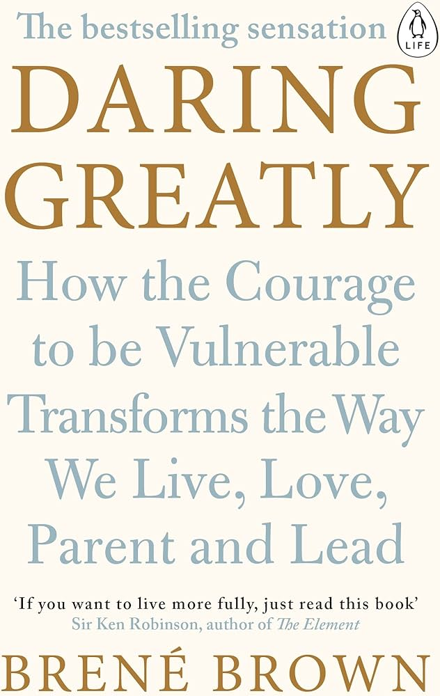
Ikigai
click me to buy this bookIkigai by Héctor García and Francesc Miralles explores the Japanese concept of ikigai, meaning “reason for being.” The book explains how discovering your purpose can lead to a longer, happier, and more fulfilling life. A central idea is that ikigai lies at the intersection of what you love, what you are good at, what the world needs, and what you can be paid for. Finding this balance helps individuals live with meaning and satisfaction. The book draws inspiration from the longevity of people in Okinawa, Japan, who live active, purposeful lives. It highlights habits that support well-being, such as staying physically active, maintaining strong social connections, eating moderately, and nurturing a positive mindset. Another key lesson is the importance of living in the present and enjoying small moments. Rather than chasing constant achievement, fulfillment comes from daily joy, mindfulness, and continuous growth. Overall, Ikigai teaches that purpose, community, healthy habits, and a positive outlook are essential for a meaningful life. By discovering what drives you and aligning your actions with your values, you can live with greater happiness and longevity.
Can't Hurt Me
click me to buy this bookCan't Hurt Me by David Goggins is a powerful memoir and self-discipline guide that shows how mental toughness and accountability can help individuals overcome extreme adversity. Goggins shares his journey from a traumatic childhood and poverty to becoming a Navy SEAL, ultramarathon runner, and motivational figure. A central idea is the 40% rule, which suggests that when people feel exhausted or ready to quit, they have only reached about 40% of their true capacity. By pushing beyond perceived limits, individuals can unlock greater strength and resilience. The book emphasizes taking full accountability for one’s life. Instead of blaming circumstances, Goggins encourages confronting weaknesses honestly, setting high standards, and consistently working to improve. Another key lesson is building mental toughness through discomfort. Growth happens when you face challenges, embrace pain, and do things that are hard. Techniques like setting tough goals, developing discipline, and using past struggles as motivation help build a resilient mindset. Overall, Can’t Hurt Me teaches that self-discipline, perseverance, and a strong mindset can transform adversity into strength. By pushing beyond limits and taking responsibility, anyone can achieve personal growth and extraordinary results.
Daring Greatly
click me to buy this bookDaring Greatly by Brené Brown explores how vulnerability is not a weakness but a source of courage, connection, and meaningful living. Based on years of research, the book shows that embracing vulnerability allows people to build stronger relationships, foster creativity, and live wholeheartedly. A central idea is that vulnerability is the foundation of courage. Society often encourages perfection and emotional armor, but true growth happens when we are willing to be seen, take risks, and face uncertainty. The book also explains the difference between shame and guilt. Shame focuses on feeling unworthy (“I am bad”), while guilt focuses on behavior (“I did something bad”). Understanding this distinction helps individuals develop self-compassion and resilience. Another key lesson is the importance of wholehearted living—engaging in life with authenticity, gratitude, and self-acceptance. By letting go of fear of judgment and embracing imperfections, people can form deeper connections and experience greater fulfillment. Overall, Daring Greatly teaches that courage comes from vulnerability. By showing up, being authentic, and accepting imperfections, individuals can build meaningful relationships, enhance creativity, and lead a more courageous and connected life.
Productivity & Focus
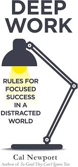
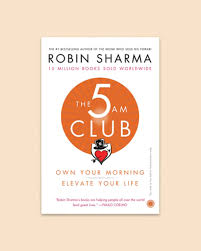
Deep Work
click me to buy this bookDeep Work by Cal Newport explains that focused, distraction-free work is essential for success in today’s digital world. Newport distinguishes between deep work—high-value, cognitively demanding tasks—and shallow work, such as emails and social media, that consume time without meaningful results. He emphasizes building routines, minimizing distractions, and scheduling uninterrupted focus sessions to improve productivity. The book also highlights the importance of embracing boredom and reducing constant digital stimulation to strengthen concentration. By mastering deep work, individuals can learn faster, produce better results, and gain a competitive advantage in their careers.
The 5 am club
click me to buy this bookThe 5 AM Club by Robin Sharma teaches that waking up early can transform productivity, mindset, and overall success. The book introduces the 20/20/20 formula: 20 minutes of exercise to boost energy, 20 minutes of reflection or meditation for clarity, and 20 minutes of learning to support personal growth. Sharma emphasizes that owning your morning helps you control your day, build discipline, and achieve long-term goals. By developing consistent routines, minimizing distractions, and focusing on self-improvement, individuals can enhance performance, strengthen mental resilience, and create a balanced, purpose-driven life.
Eat That Frog
click me to buy this bookEat That Frog! by Brian Tracy teaches effective time management and productivity by tackling your most important and difficult task—the “frog”—first each day. Tracy explains that procrastination wastes time and reduces success, while prioritizing high-value tasks leads to better results. The book emphasizes setting clear goals, planning ahead, breaking tasks into smaller steps, and maintaining focus without distractions. By developing discipline and consistent work habits, individuals can overcome procrastination, increase efficiency, and achieve more in less time, leading to greater confidence, reduced stress, and long-term personal and professional success.
Power & Influence
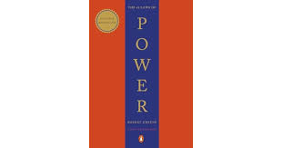
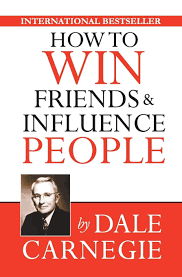
The 48 Laws of Power
click me to buy this bookThe 48 Laws of Power by Robert Greene explores timeless principles of power, influence, and strategy drawn from history, politics, and human behavior. The book outlines 48 laws that teach how to gain, maintain, and protect power in personal and professional life. Key lessons include guarding your reputation, concealing intentions, avoiding unnecessary conflict, and mastering self-control. Greene emphasizes understanding human nature and social dynamics to navigate competition and manipulation. While controversial, the book highlights the importance of strategic thinking, awareness, and emotional discipline to succeed in complex social environments.
How to Win Friends and Influence people
click me to buy this bookHow to Win Friends and Influence People by Dale Carnegie teaches timeless principles of interpersonal communication and leadership. The book emphasizes building genuine relationships, listening actively, and showing empathy toward others. Carnegie explains that success in personal and professional life comes from understanding human nature, avoiding criticism, and focusing on positive interactions. The book provides practical advice on handling difficult people, making others feel important, and developing charisma through effective communication. By applying these principles consistently, individuals can build stronger networks, improve their influence, and achieve greater success in all areas of life.